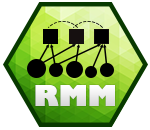

rmm 
An R package for fitting Bayesian multiple membership multilevel regression models
The rmm package provides an interface to fit Bayesian multiple membership multilevel models with endogenized weights using JAGS from within R for a variety of outcomes (linear, logit, conditional logit, Cox, Weibull).
Most multilevel analyses examine how lower-level units (e.g. individuals) are affected by their embedding in contextual/aggregate units at a higher level (e.g. neighborhoods) (= macro-micro link). The rmm package uses the multiple membership multilevel model to conceptually reverse this setup. It allows studying how the effect of units at lower levels propagates to a higher level (= micro-macro link).
Previous studies examining micro-macro links either aggregated or disaggregated the data. Both approaches obstruct the inherent aggregation problem, ignore dependencies among observations, which induces excessive Type-I and Type-II error, and cannot separate micro- from macro-level variance. The generalized multiple membership multilevel model (MMMM) is able to overcome these problems by explicitly modeling the aggregation from micro to macro level by including an aggregation function in the regression model. It is a theoretically and statistically sound solution to the study of micro-macro links with regression analysis.
With the rmm package, you can…
explicitly model how the effect of lower level units propagate to a higher level
examine the fit of different aggregation functions, such as the min/max, mean, sum function
uncover heterogeneity in the effect of lower-level units on higher-level entities
control dependencies that arise from crisscrossing data structures
estimate the (residual) variance at lower and higher level
Here is an example of rmm in action:

More information can be found here
Developers
I welcome contributions to the package! Feel free to submit changes for review or contact me if you have any questions.
Issues or Feature Requests
If you would like to log an issue or submit a feature request, please create a new issue or comment on an existing issue on GitHub Issues on this repo.
Changelog
See NEWS.md for the package changelog.
<<<<<<< HEAD
More information can be found here >>>>>>> 8755cf19462215deb9bfe666403ee10b1cc89448